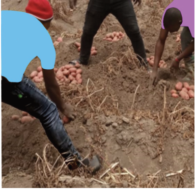
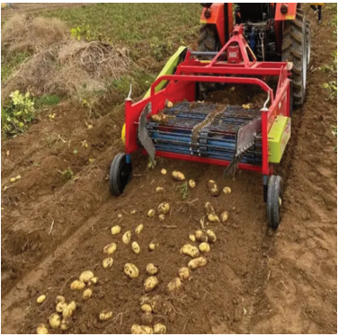

Agriculture for Secondary Schools
Activity 5.8
Visit the round potato field you have established and do the following practices:
(a) Identify the pests available in the field at your school;
(b) Identify the suitable management measures for the identified pests; and
(c) Apply the identified management measure in the established field and
evaluate its effectiveness.
Harvesting
The days to maturity on round potatoes depend on the variety. Early-maturing
round potato varieties will be ready in 3 months, medium-maturing varieties will
take 3 to 4 months, and late-maturing round potato varieties will take more than
four months to mature from planting.
Potatoes are ready for harvesting when the leaves are dry, have turned yellow, and
when the potato’s skin does not come off quickly when rubbed with the fingers.
Additionally, the potatoes should easily separate from the roots. Harvesting can
be done by hand or machine (Figure 5.10 (a) and (b)).
Figure 5.10 (b): Mechanised potato harvesting
Figure 5.10 (a): Potato harvesting by hands
Source: https://hzpt.com/potatoharvester/
83
Student’s Book Form Two